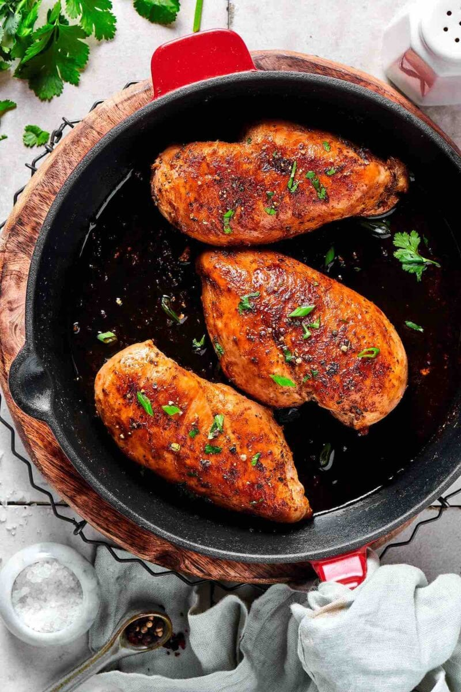

Chicken Recipe

Poultry Portion
“Super chickens naturally have more fat, so they will roast differently to other birds. To make this dish with a standard chicken, see our recipe at jamiemagazine.com. ”
Ingredients
- 2 kg Maris Piper potatoes
- 2 lemons
- 1 x 3-3.5 kg whole free-range super chicken
- olive oil
- 5 cloves of garlic
- ½ a bunch of fresh thyme (15g)
- ½ a bunch of fresh chervil (15g)
- ½ a bunch of fresh basil (15g)
- ½ a bunch of fresh flat-leaf parsley (15g)
- 4 tablespoons fat-free Greek yoghurt
- extra virgin olive oil
- bulb of fennel
- ¼ of a white cabbage
- 4 medium carrots
Steps
- Step 1- Make the marinade
Combine olive oil, lemon juice, oregano, garlic cloves, sweet paprika, red chili, brown sugar, cayenne pepper, and salt in the food processor and blend into a smooth paste.
- Step 2- Marinate the chicken
Add chicken to a large bowl and marinate the chicken with peri peri spice paste. Cover the bowl and refrigerate for a few hours or overnight.
peri peri marinade.
- Step 3- Cook the chicken
Toss the pieces onto a preheated charcoal grill or a greased grill pan. Keep turning the pieces regularly to prevent burning.
grilled peri peri chicken.
- Once the internal temperature reaches 165°F, turn off the heat. This may take up to 12 minutes, depending on the size of the chicken pieces.
Return to main Page